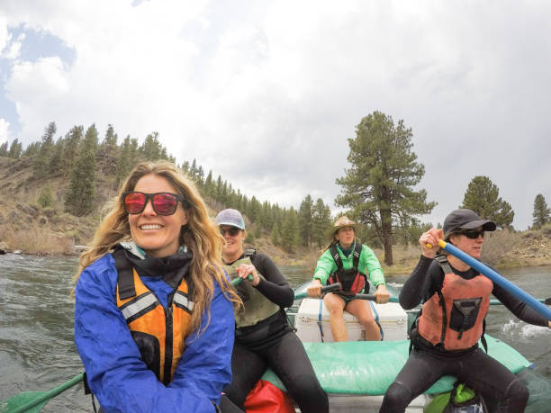
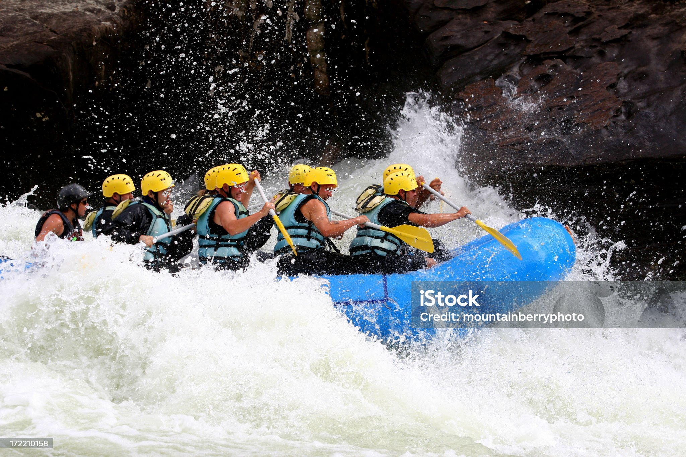
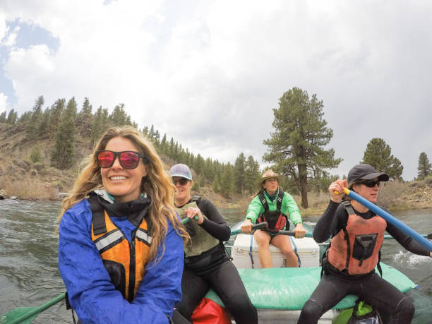
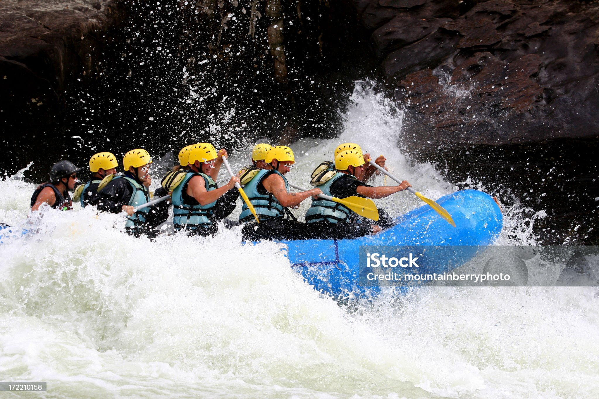

White Water Rafting

he purpose of the our Rafting website is to provide information about our rafting company and what our company can to offer. To provide a unique browsing experience to the visitor for to check on available short and long rafting trips for individuals and groups. They will also be able to find answers to common questions and contact us to schedule an excursion.
 


